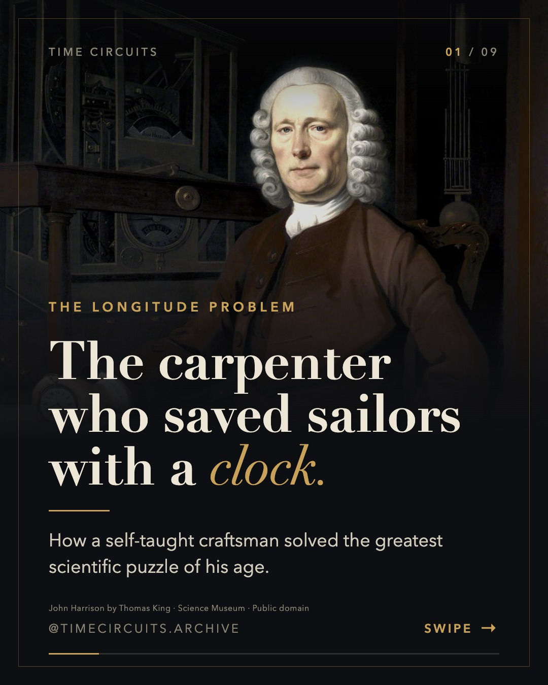
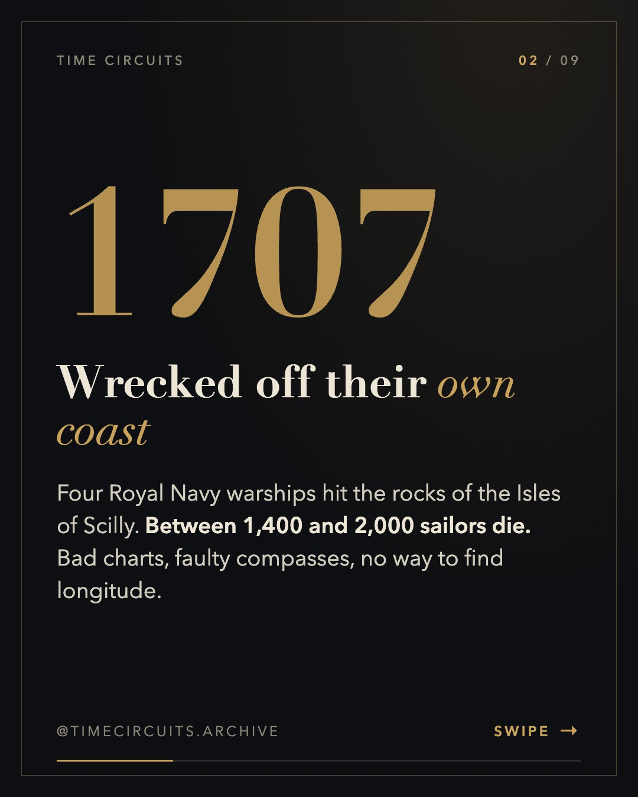
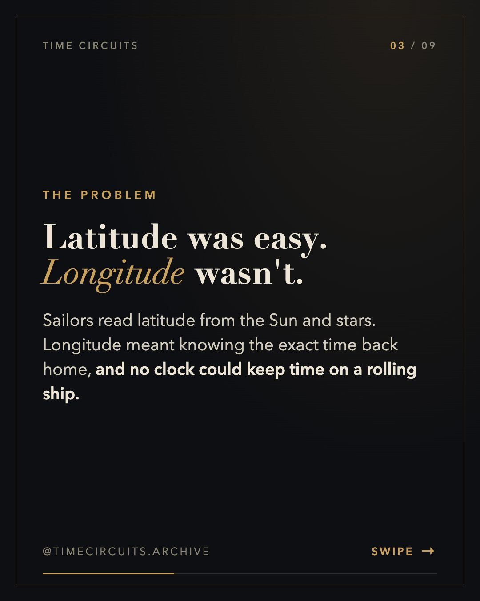
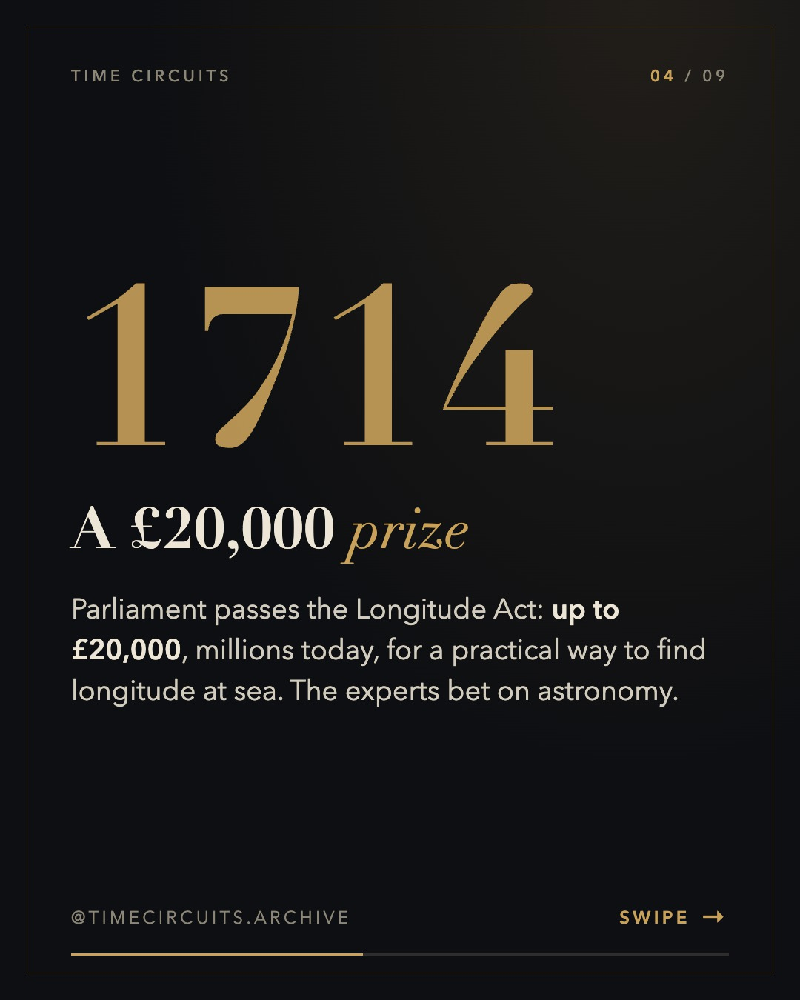
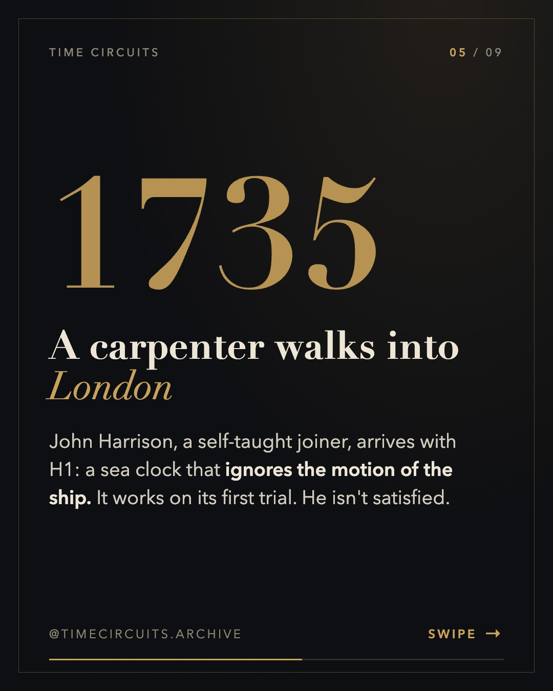
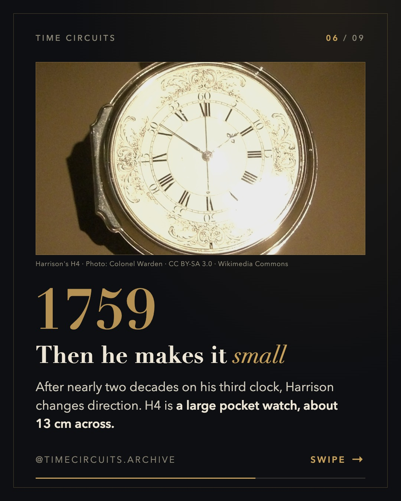
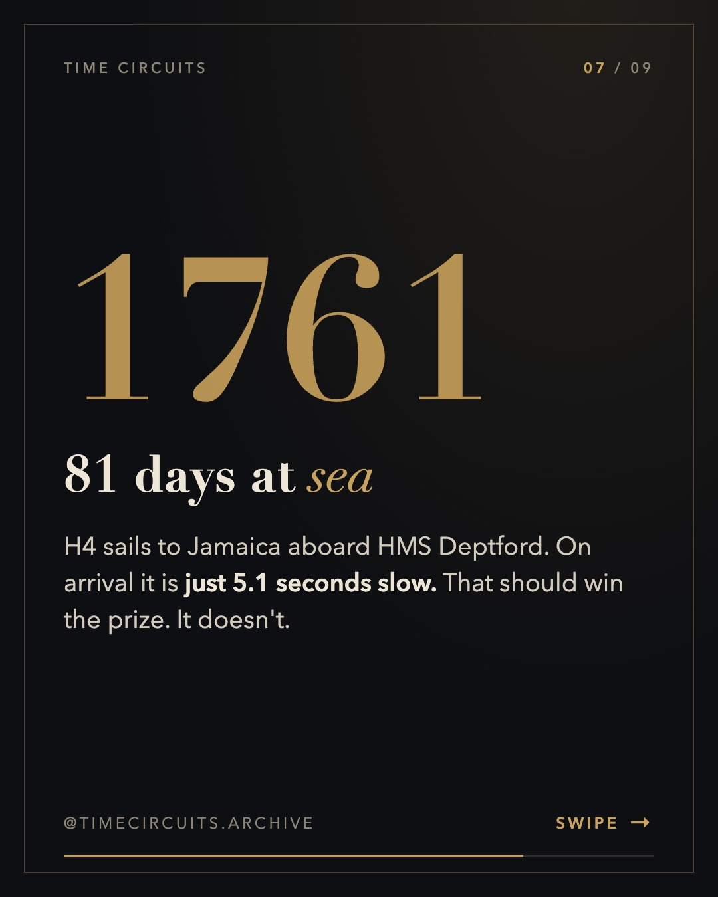
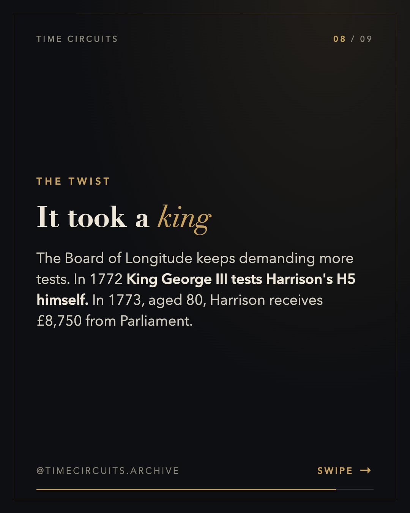
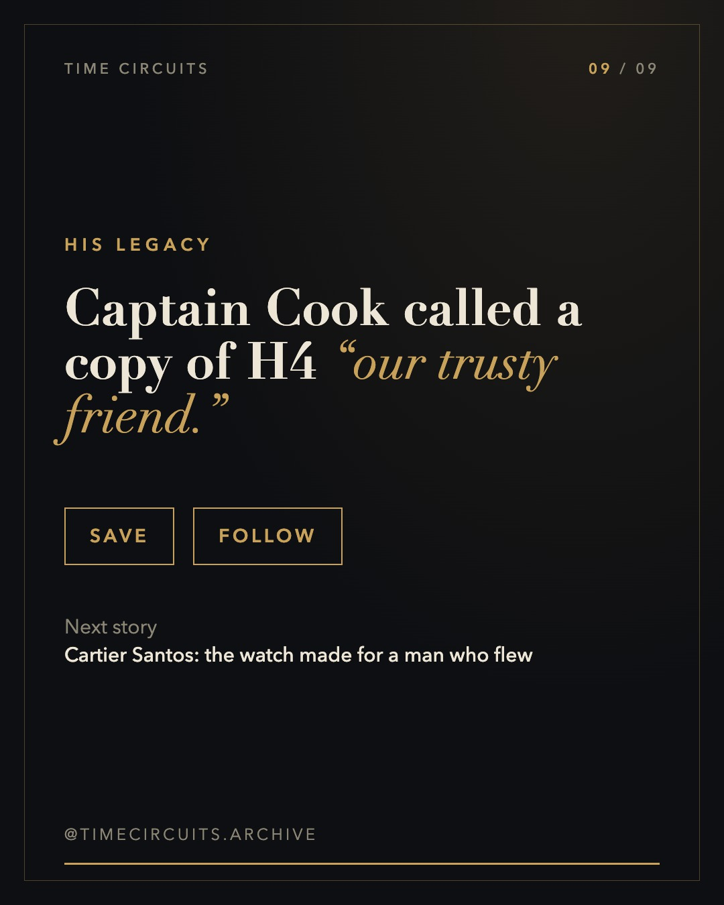

John Harrison and the longitude problem









Caption
Thousands of sailors died because nobody could fix a ship's position at sea. ⚓ In 1714 Britain offered a fortune to whoever solved the longitude problem. Everyone expected an astronomer. Instead, a self-taught carpenter spent decades building ever-better sea clocks, and his H4 changed navigation forever. Officially, the Longitude Prize was never awarded to anyone, though Harrison was eventually paid over £23,000. Would you have backed the stars or the clock? 👇 Sources: Royal Museums Greenwich; Wikipedia (John Harrison; Scilly naval disaster of 1707). #johnharrison #longitude #horology #watchhistory #chronometer #maritimehistory #royalobservatory #clockmaker #watchesofinstagram
Sources
- Royal Museums Greenwich — Longitude found: https://www.rmg.co.uk/stories/time/harrisons-clocks-longitude-problem
- John Harrison (dates, H4 size, George III & H5, £8,750 in 1773, prize never awarded): https://en.wikipedia.org/wiki/John_Harrison
- Scilly naval disaster of 1707 (1,400–2,000 deaths): https://en.wikipedia.org/wiki/Scilly_naval_disaster_of_1707
- H4 voyage to Jamaica, 5.1 seconds over 81 days: https://www.worldhistory.org/article/2197/harrisons-marine-chronometer/
- Cook's K1, 'our trusty friend the Watch': https://www.rmg.co.uk/collections/objects/rmgc-object-79143
- Larcum Kendall & K1: https://en.wikipedia.org/wiki/Larcum_Kendall
Notes for approval
- Independent fact-check (fact-checker subagent): PASS WITH FIXES → all required fixes applied. See factcheck.md.
- Scilly 1707: several causes (charts, compasses, longitude), no longer 'just' longitude.
- H4 photo is CC BY-SA 3.0: credit shown on the slide.